Daftar isi
Isi panduan
- Gambaran umum Akurata POS
- Peran pengguna dan batas akses
- Login, daftar, OTP, dan lupa password
- Dashboard operasional
- Penjualan, pajak, diskon, dan invoice
- Quotation
- Produk, stok, barcode, import Excel, dan paket
- Purchase Order dan terima barang
- Piutang, DP, pembayaran parsial, dan invoice pembayaran
- Laporan penjualan dan pembelian
- Profil bisnis, pajak, rekening, dan logo dokumen
- Integrasi Loyverse
- Akses user, log aktivitas, dan chat CS
- Laman Administrator
- Penggunaan mobile
- Pertanyaan umum dan checklist penggunaan
1. Gambaran umum
Akurata POS adalah sistem backoffice dan kasir berbasis web untuk membantu bisnis mengelola transaksi harian, stok, pembelian, piutang, laporan, dokumen PDF, dan sinkronisasi Loyverse.
KasirTransaksi dapat berisi lebih dari satu produk, diskon per item, pajak otomatis, pembayaran tunai, QRIS, transfer, atau tempo.
StokProduk mendukung satuan, volume/berat, barcode, kamera scanner, import Excel, dan composite item untuk paket.
IntegrasiProduk dapat dipush ke Loyverse, receipt Loyverse dapat ditarik, dan pajak/store Loyverse dapat disinkronkan.
Role
2. Peran pengguna dan batas akses
Administrator
Mengelola semua outlet, melihat akun, menghapus akun/toko secara aman, menangani chat CS, dan impersonate ke outlet tertentu.
Owner
Pemilik bisnis. Dapat membuka semua fitur outlet: transaksi, produk, PO, piutang, laporan, integrasi, log, profil bisnis, dan akses tim.
Manager
Pengguna backoffice dengan fitur dibatasi. Tidak dapat membuka Integrasi Loyverse, Log, dan edit Profil Bisnis.
Prinsip akses: pengguna hanya boleh melihat data outlet aktifnya. Administrator dapat masuk ke outlet via impersonate, tetapi aksi impersonate tidak perlu dicatat sebagai log outlet.
| Fitur | Administrator | Owner | Manager | Cashier |
|---|
| Dashboard, penjualan, produk, PO, piutang | Via impersonate | Penuh | Penuh | Terbatas sesuai kebutuhan kasir |
| Integrasi Loyverse | Global / support | Penuh | Tidak | Tidak |
| Log aktivitas | Global / support | Penuh | Tidak | Tidak |
| Profil bisnis dan pajak | Global / support | Penuh | Tidak | Tidak |
| Kelola outlet dan impersonate | Penuh | Tidak | Tidak | Tidak |
Masuk akun
3. Login, daftar, OTP, dan lupa password
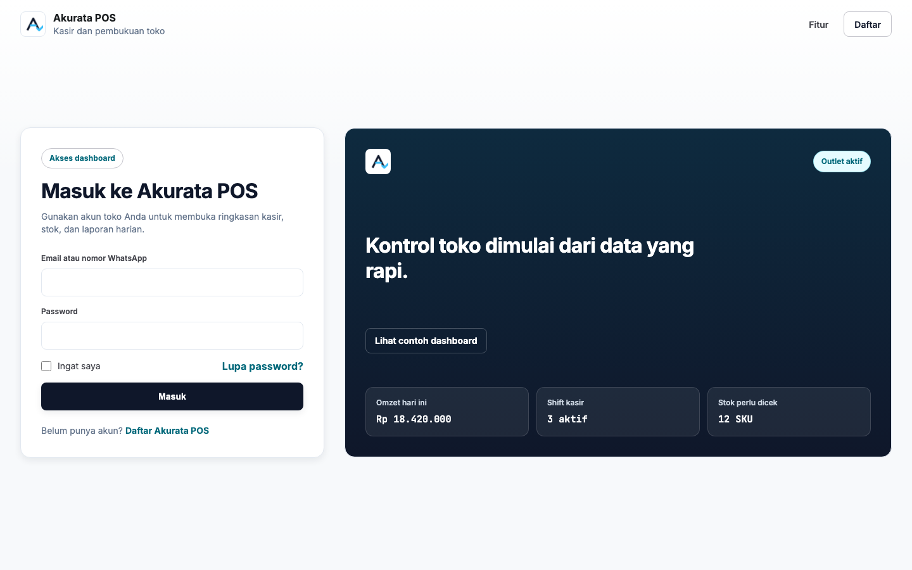
Halaman login digunakan untuk membuka dashboard berdasarkan sesi akun.
Login
- Buka halaman login Akurata POS.
- Masukkan email atau nomor WhatsApp yang terdaftar.
- Masukkan password.
- Aktifkan Ingat saya jika ingin sesi bertahan lebih lama.
- Klik Masuk.
Daftar dan OTP
- Buka halaman daftar Akurata POS.
- Isi nama bisnis, nama pengguna, email/WhatsApp, dan password.
- Sistem mengirim kode verifikasi ke email.
- Masukkan kode verifikasi sebelum kedaluwarsa.
- Setelah valid, akun dan outlet pertama dibuat.
Jika kode verifikasi tidak masuk, cek folder spam/promosi, pastikan email benar, lalu ulangi pendaftaran atau hubungi tim support Akurata.
Operasional
4. Dashboard operasional
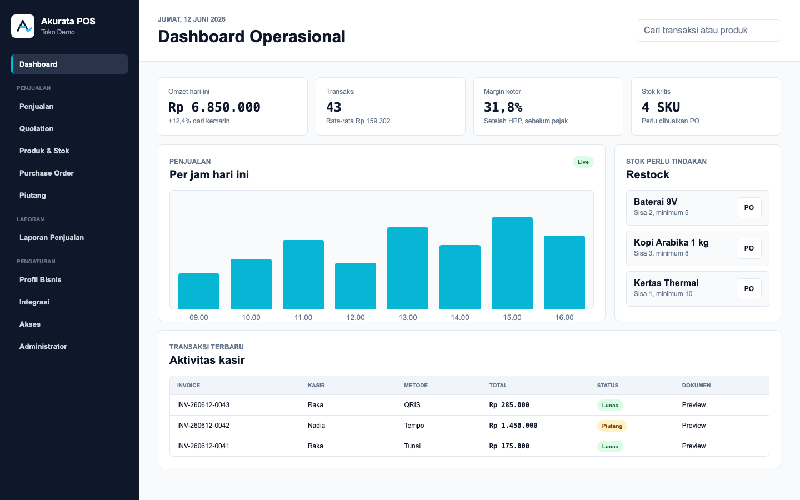
Dashboard menampilkan omzet, transaksi, margin, stok kritis, aktivitas kasir, dan shortcut restock.
- Gunakan kartu metrik untuk melihat kondisi harian secara cepat.
- Cek grafik per jam untuk membaca jam ramai dan pola transaksi.
- Gunakan daftar stok kritis untuk membuat PO cepat.
- Gunakan transaksi terbaru untuk membuka detail dan preview dokumen.
Penjualan
5. Penjualan, pajak, diskon, dan invoice
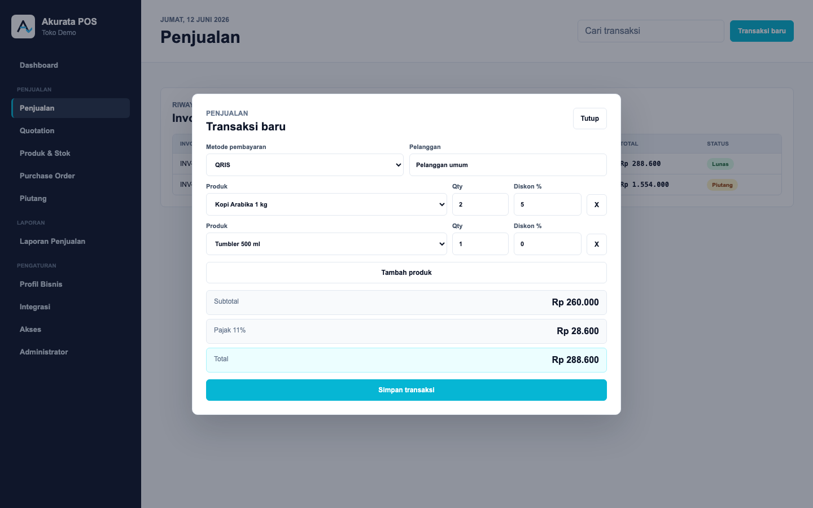
Transaksi baru dapat berisi beberapa item, diskon, pajak, dan pilihan metode pembayaran.
- Buka menu Penjualan.
- Klik Transaksi baru.
- Pilih metode pembayaran: Tunai, QRIS, Transfer, atau Tempo.
- Pilih produk, qty, dan diskon jika ada.
- Jika pajak diaktifkan, sistem menghitung subtotal + pajak.
- Klik Simpan transaksi.
- Buka Preview untuk melihat invoice PDF.
Pajak dicatat sebagai kolom terpisah. Di laporan penjualan, pajak tidak dihitung sebagai keuntungan.
Quotation
Quotation digunakan untuk membuat penawaran sebelum transaksi final. Owner dapat menampilkan atau menyembunyikan menu Quotation melalui Profil Bisnis. Jika fitur dimatikan, halaman akan memberi tahu bahwa Quotation tidak sedang ditampilkan.
Produk
6. Produk, stok, barcode, import Excel, dan paket
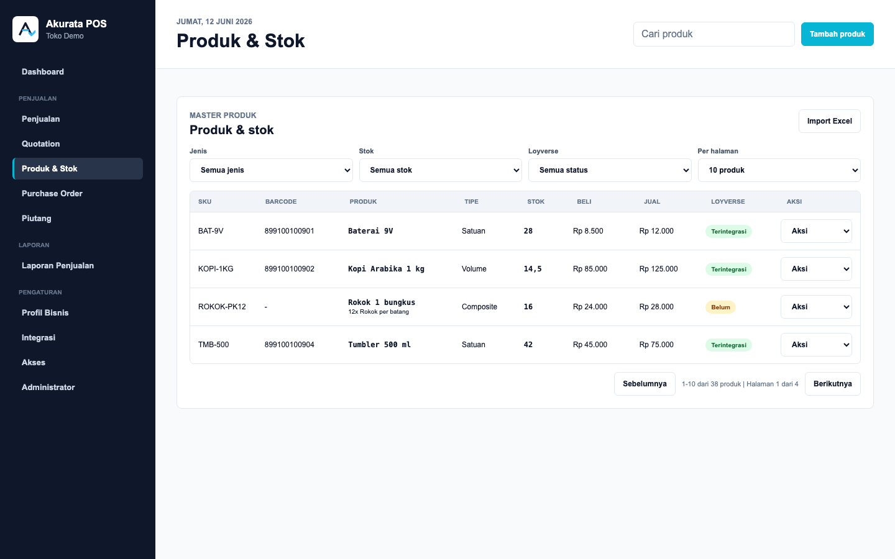
Tabel produk mendukung filter, pagination 10-100 produk, dan dropdown aksi agar tampilan tetap ringkas.
Tambah atau edit produk
- Klik Tambah produk atau pilih Edit produk dari dropdown aksi.
- Isi SKU, barcode, nama produk, kategori, tipe jual, stok, HPP, dan harga jual.
- Pilih Volume / Berat untuk produk desimal seperti beras, kopi kiloan, atau cairan.
- Pilih Composite / Paket untuk produk paket seperti rokok per bungkus berisi beberapa batang.
Import Excel dan barcode
- Klik Unduh template untuk mengambil format Excel.
- Isi sheet Produk dan Komponen.
- Upload file melalui Import Excel.
- Barcode dapat diketik manual atau dipindai menggunakan kamera.
Agar push produk ke Loyverse tidak gagal, pastikan SKU maksimal 40 karakter, nama maksimal 64 karakter, barcode unik, harga tidak negatif, dan produk volume hanya dipakai jika qty boleh desimal.
Pembelian
7. Purchase Order dan terima barang
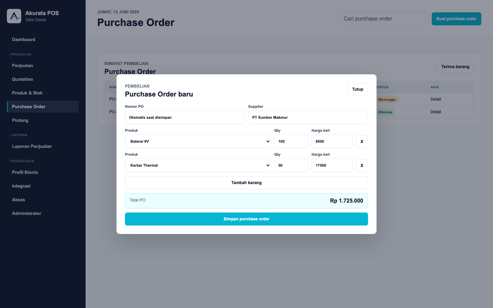
PO mendukung lebih dari satu barang dan tidak langsung menambah stok sampai barang diterima.
- Buka menu Purchase Order.
- Klik Buat purchase order.
- Isi supplier dan beberapa item barang.
- Simpan PO. Status masih Menunggu.
- Saat barang datang, klik Terima barang.
- Masukkan biaya tambahan seperti ongkir, handling, atau biaya lain.
- Setelah diterima, stok produk bertambah dan HPP disesuaikan.
Rumus HPP PO: Pembelian per pcs + (Biaya lain / Qty). HPP baru disesuaikan dengan pendekatan rata-rata: HPP PO dan HPP sebelumnya dirata-ratakan.
Piutang
8. Piutang, DP, pembayaran parsial, dan invoice pembayaran
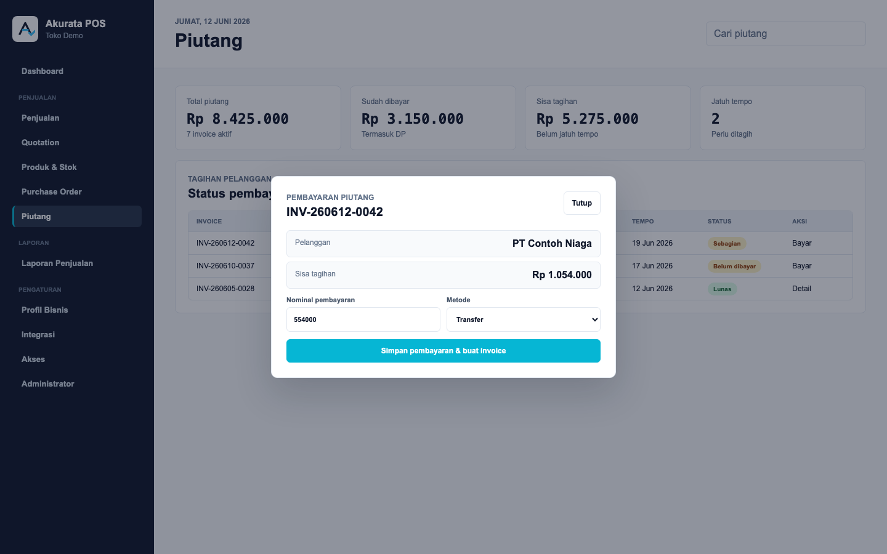
Piutang muncul dari transaksi tempo dan dapat dibayar sebagian sampai lunas.
- Pada transaksi penjualan, pilih metode Tempo.
- Isi pelanggan, jatuh tempo, dan DP jika ada.
- Buka menu Piutang untuk melihat tagihan.
- Klik Bayar untuk mencatat pembayaran penuh atau sebagian.
- Setiap pembayaran dapat dibuatkan invoice pembayaran PDF.
- Edit jatuh tempo jika kesepakatan pembayaran berubah.
Jika transaksi tempo belum muncul di Piutang, refresh halaman dan pastikan metode pembayaran transaksi benar-benar menggunakan Tempo. Jika masih belum muncul, hubungi admin atau tim support.
Laporan
9. Laporan penjualan dan pembelian
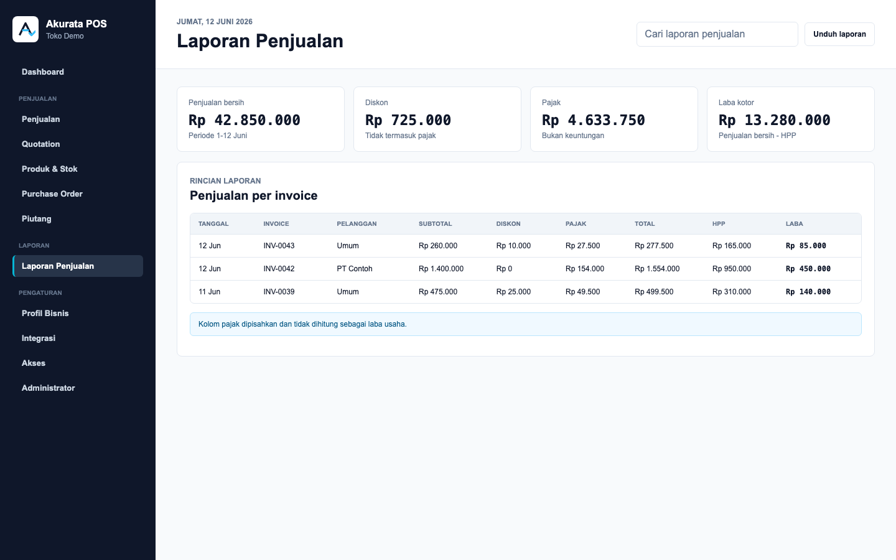
Laporan memisahkan subtotal, diskon, pajak, total, HPP, dan laba kotor.
Laporan penjualan
- Buka menu Laporan Penjualan.
- Gunakan pencarian untuk menemukan invoice, pelanggan, atau kasir.
- Perhatikan kolom pajak karena pajak bukan laba.
- Gunakan angka laba kotor untuk evaluasi produk dan margin.
Laporan pembelian
- Buka menu Laporan Pembelian.
- Cek PO, supplier, tanggal, total, dan biaya tambahan.
- Gunakan data ini untuk audit HPP dan stok masuk.
Pengaturan
10. Profil bisnis, pajak, rekening, dan logo dokumen
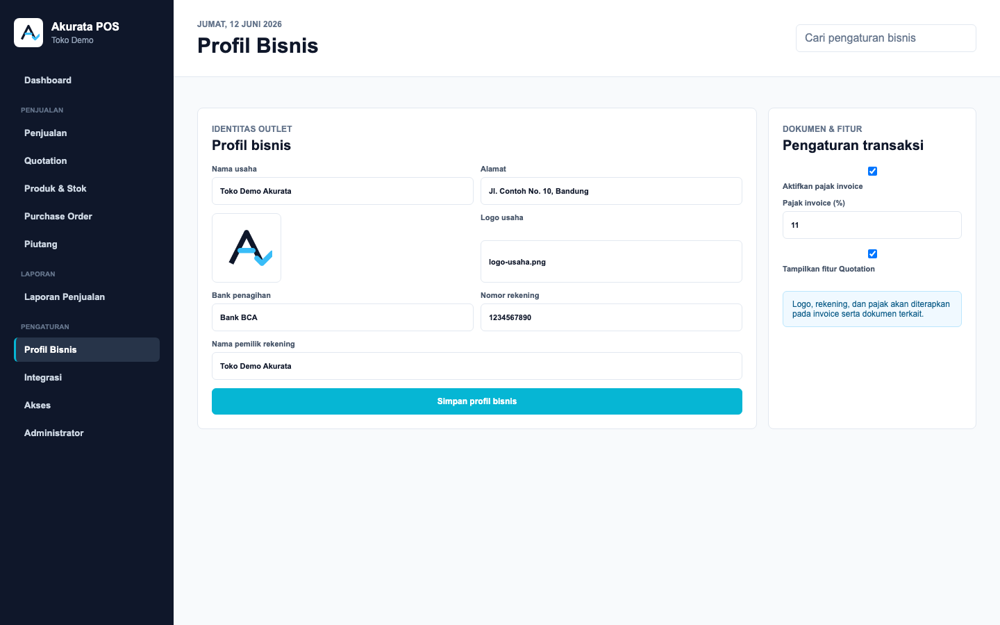
Profil Bisnis mengatur identitas outlet, logo dokumen, rekening penagihan, pajak, dan fitur Quotation.
- Buka Pengaturan > Profil Bisnis.
- Isi nama usaha dan alamat yang akan muncul pada dokumen.
- Upload logo usaha. Logo digunakan pada invoice, quotation, dan dokumen pembayaran.
- Isi rekening penagihan untuk invoice tempo.
- Aktifkan atau nonaktifkan pajak invoice dan isi persentase pajak.
- Aktifkan atau nonaktifkan fitur Quotation.
Saat pajak dinyalakan dan integrasi Loyverse aktif, sistem dapat membuat atau menyinkronkan pajak ke Loyverse.
Loyverse
11. Integrasi Loyverse
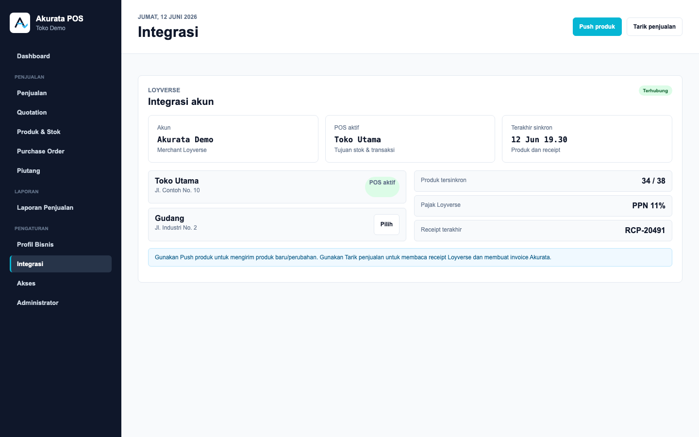
Integrasi Loyverse menyimpan akun merchant, POS/store aktif, sinkron produk, pajak, stok, dan receipt.
- Buka menu Integrasi.
- Klik Connect Loyverse jika belum terhubung.
- Login dengan akun Loyverse dan berikan izin akses yang diminta.
- Pilih POS/store yang dipakai outlet.
- Klik Push produk untuk mengirim produk Akurata ke Loyverse.
- Klik Tarik penjualan untuk membaca receipt Loyverse dan membuat invoice di Akurata.
Pastikan akun Loyverse yang dipakai adalah akun bisnis yang benar dan memiliki akses untuk mengelola produk, stok, pajak, POS, dan transaksi.
Akses dan CS
12. Akses user, log aktivitas, dan chat CS
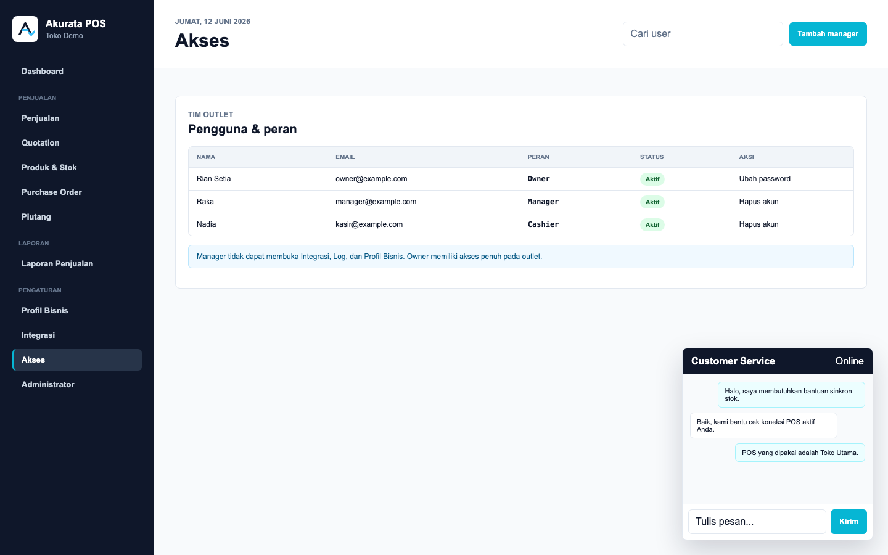
Owner dapat mengelola user outlet. Chat CS membantu outlet berkomunikasi dengan administrator tanpa refresh manual.
Akses user
- Buka Pengaturan > Akses.
- Tambahkan Manager atau Cashier sesuai kebutuhan.
- Gunakan ubah password jika akun tim perlu direset.
- Gunakan hapus akun untuk menonaktifkan user tanpa merusak histori transaksi.
Log dan chat
- Log aktivitas mencatat login, logout, transaksi, produk, PO, integrasi, dan aktivitas penting lain.
- Log memakai pagination agar tidak memuat terlalu banyak data sekaligus.
- Chat CS mendukung sesi aktif, riwayat, dan sesi baru setelah chat berakhir.
Administrator
13. Laman Administrator
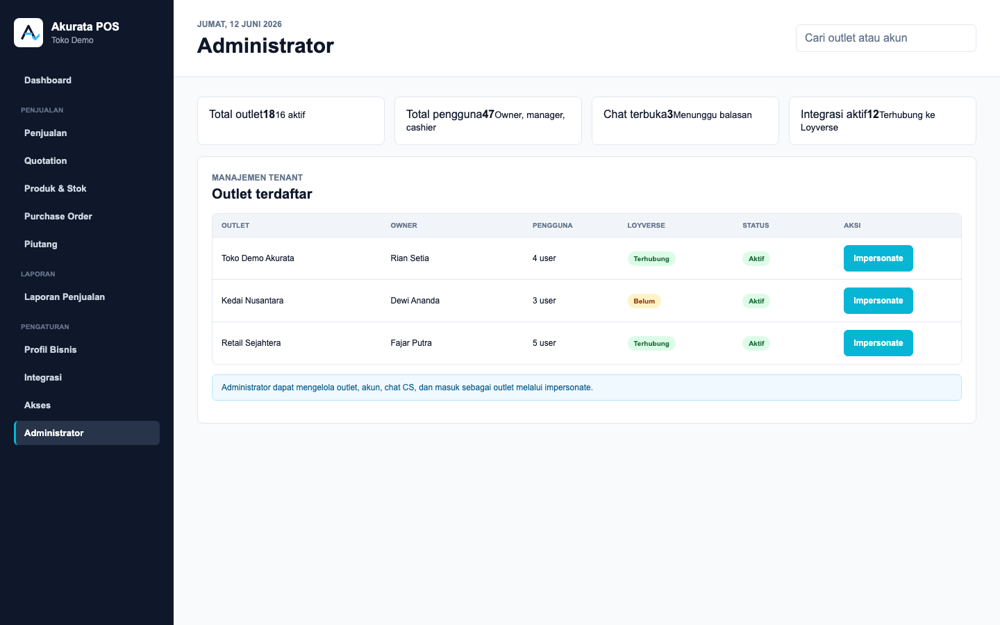
Administrator mengelola outlet, akun, integrasi, dan chat lintas tenant.
- Login menggunakan akun role administrator.
- Buka laman Administrator dari menu yang tersedia.
- Cari outlet atau akun yang ingin ditinjau.
- Gunakan Impersonate untuk masuk sebagai outlet yang dituju.
- Gunakan hapus akun atau toko jika diperlukan sesuai SOP internal.
Hapus toko dan akun adalah tindakan sensitif. Pastikan tindakan ini sudah disetujui pemilik bisnis dan tidak sedang ada pekerjaan operasional yang berjalan.
Mobile
14. Penggunaan HP/mobile
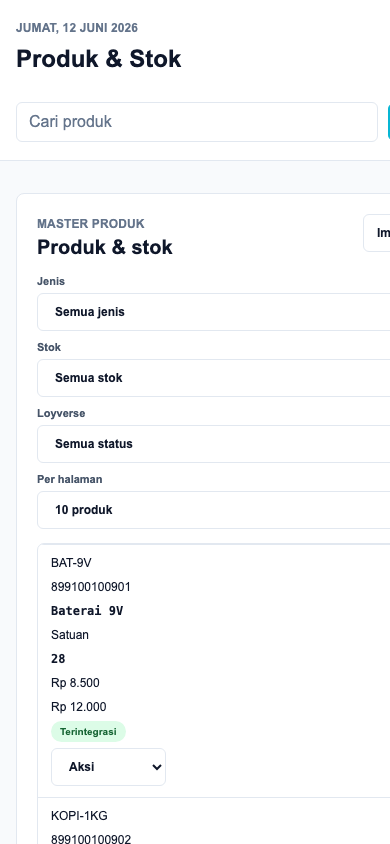
Tampilan mobile menyusun tabel menjadi kartu agar tetap mudah dibaca di layar kecil.
- Gunakan menu mobile untuk membuka halaman dashboard.
- Form transaksi, PO, produk, dan piutang akan berubah menjadi satu kolom.
- Tabel berubah menjadi kartu dengan label kolom di setiap baris.
- Scan barcode kamera memerlukan izin kamera dari browser. Gunakan koneksi web yang aman agar izin kamera dapat berjalan normal.
Bantuan
15. Pertanyaan umum pengguna
| Masalah | Penyebab umum | Langkah yang bisa dilakukan |
|---|
| Tidak bisa login | Email/nomor WhatsApp atau password salah | Coba ulangi, gunakan fitur Lupa Password, atau minta Owner/Admin mengecek akun. |
| Kode verifikasi tidak masuk | Email salah atau masuk ke folder spam/promosi | Cek folder spam/promosi, pastikan email benar, lalu ulangi permintaan kode. |
| Produk tidak bisa dipush ke Loyverse | Data produk belum sesuai aturan sinkronisasi | Cek SKU, nama produk, barcode, harga, tipe satuan/volume, dan POS Loyverse aktif. |
| Stok Loyverse tidak berubah | Produk belum tersinkron atau POS yang dipilih belum sesuai | Pastikan produk sudah terintegrasi, POS aktif benar, lalu lakukan update produk atau tarik penjualan ulang. |
| Piutang tidak muncul | Transaksi belum memakai metode Tempo | Buka detail transaksi, pastikan metode pembayaran Tempo, lalu refresh halaman Piutang. |
| Kamera barcode tidak aktif | Izin kamera belum diberikan | Izinkan kamera pada browser dan coba buka ulang popup scan barcode. |
| Invoice belum sesuai | Logo, rekening, atau pajak belum diatur | Buka Profil Bisnis dan lengkapi logo, rekening penagihan, serta pengaturan pajak. |
16. Checklist sebelum mulai menggunakan Akurata
- Login sebagai Owner dan lengkapi Profil Bisnis.
- Upload logo usaha agar tampil pada invoice dan dokumen.
- Isi rekening penagihan jika bisnis memakai pembayaran tempo.
- Atur pajak sesuai kebutuhan bisnis.
- Tambahkan user Manager atau Cashier sesuai tugas tim.
- Masukkan produk awal atau gunakan Import Excel.
- Atur barcode dan tipe produk satuan, volume, atau composite jika diperlukan.
- Hubungkan Loyverse jika bisnis memakai POS Loyverse.
- Uji satu transaksi kecil dan cek invoice PDF.
- Cek laporan penjualan dan stok setelah transaksi tersimpan.
Catatan pembaruan: Navigasi dashboard kini menggunakan baris menu horizontal di bagian atas halaman, menggantikan sidebar kiri. Sub-menu (Penjualan, Laporan, Pengaturan) dapat dibuka melalui dropdown pada menu yang bersangkutan. Pada tampilan mobile, navigasi dapat diakses melalui tombol hamburger di sebelah kanan bar navigasi.